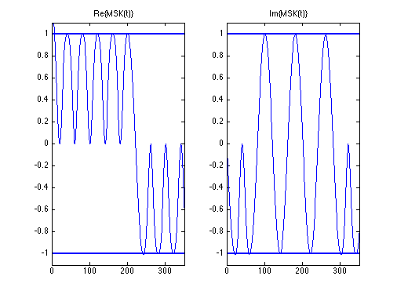

FSK
Copyright 2007 Telecommunications Lab
M = 2; k = log2(M); msg = randint(20,1,M); % Random signal y = mskmod(msg,M,[],0); % Modulate. abs_sig_ = abs(y); %fitting t1=1:1:40; t = 1:.1:40; yy_imag = spline(t1,imag(y),t); yy_real = spline(t1,real(y),t); abs_sig=spline(t1,abs_sig_,t); %%%% %figure; subplot(1,2,1);plot(yy_real);hold on;plot(abs_sig,'LineWidth',2);plot(-abs_sig,'LineWidth',2);axis([0 350 -1.1 1.1]);title('Re\{MSK(t)\}');subplot(1,2,2);plot(yy_imag);hold on;plot(abs_sig,'LineWidth',2);plot(-abs_sig,'LineWidth',2);axis([0 350 -1.1 1.1]);title('Im\{MSK(t)\}');